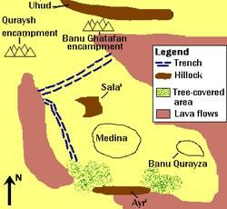

The Surah talks about the Battle of Khandak and provides some guidance on day-to-day life.
সূরাটি খন্দকের যুদ্ধ সম্পর্কে কথা বলে এবং দৈনন্দিন জীবনের কিছু নির্দেশনা প্রদান করে।
O Prophet! Fear for the sake of God and hearken not to the Unbelievers and the Hypocrites, verily God is full of Knowledge and Wisdom. But follow that which comes to thee by inspiration from thy Lord; for God is well acquainted with that ye do. And put thy trust in God, and enough is God as a disposer of affairs.
হে নবী! আল্লাহর জন্য ভয় কর এবং অবিশ্বাসী ও মুনাফিকদের কথায় কান দিও না, নিশ্চয়ই আল্লাহ জ্ঞান ও প্রজ্ঞায় পরিপূর্ণ। কিন্তু তোমার পালনকর্তার পক্ষ থেকে তোমার কাছে যা আসে তার অনুসরণ কর। কারণ তোমরা যা কর ঈশ্বর সে সম্পর্কে ভালোভাবে অবহিত। আর আল্লাহ্র উপর ভরসা কর, আর আল্লাহ্ই কার্য-নির্ধারক হিসাবে যথেষ্ট।
God has not made for any man two qalbs (minds) in his body, nor has He made your wives whom ye divorce by Zihar your mothers, nor has He made your adopted sons your sons; such is your speech by your mouths, but God tells the truth and He shows the way: Call them by their fathers; that is more just in the sight of God. But if you do not know their fathers, then they are brothers in religion, and those entrusted to you. But there is no blame on you if ye make a mistake therein—the intention of your qalbs (minds); and God is Oft-Returning, Most Merciful.
আল্লাহ কোন পুরুষের জন্য তার শরীরে দুটি ক্বলব (মন) করেননি, না তিনি তোমাদের স্ত্রীদেরকে তোমাদের মাতা করেননি যাদেরকে তোমরা যিহারের মাধ্যমে তালাক দিয়েছ, এবং তোমাদের দত্তক পুত্রদেরকেও তোমাদের পুত্র বানাননি৷ তোমাদের মুখের কথাই এমন, কিন্তু আল্লাহ সত্য বলেন এবং তিনি পথ দেখান। এটা ঈশ্বরের দৃষ্টিতে আরও ন্যায়সঙ্গত। কিন্তু যদি আপনি তাদের পিতাদের না জানেন, তাহলে তারা ধর্মে ভাই, এবং যারা আপনার উপর অর্পিত। কিন্তু তাতে যদি তোমরা ভুল করে থাকো তাতে তোমাদের কোন দোষ নেই- তোমাদের ক্বলবের নিয়ত; আর ঈশ্বর প্রত্যাবর্তনকারী, পরম করুণাময়।
―Zihr‖ was a pre-Islamic Arabian custom in which a husband could divorce his wife by declaring, 'Thou art henceforth as my mother‘s back' (with Zahr meaning ‗back‘). In pagan Arab societies, this form of divorce was considered final and irrevocable. However, the divorced woman was not permitted to remarry and was forced to remain under her former husband‘s custody, effectively reducing her to the status of a household slave. This practice was abolished by verses 58:1-4 of the Quran. Adopted sons should be called by the name of their biological father. If the father's name is unknown, they should be regarded as brothers in Islam.
'জিহর' ছিল একটি প্রাক-ইসলামিক আরবীয় প্রথা যেখানে একজন স্বামী ঘোষণা করে তার স্ত্রীকে তালাক দিতে পারত, 'তুমি এখন থেকে আমার মায়ের পিঠের মতো' (জহর অর্থ 'পিঠ')। পৌত্তলিক আরব সমাজে, বিবাহবিচ্ছেদের এই রূপকে চূড়ান্ত এবং অপরিবর্তনীয় বলে মনে করা হত। যাইহোক, তালাকপ্রাপ্ত মহিলাকে পুনরায় বিয়ে করার অনুমতি দেওয়া হয়নি এবং তাকে তার প্রাক্তন স্বামীর হেফাজতে থাকতে বাধ্য করা হয়েছিল, কার্যকরভাবে তাকে গৃহস্থালীর দাসের মর্যাদায় হ্রাস করা হয়েছিল। এই প্রথাটি কুরআনের 58:1-4 আয়াত দ্বারা বাতিল করা হয়েছিল। দত্তক পুত্রদের তাদের জৈবিক পিতার নামে ডাকতে হবে। পিতার নাম জানা না থাকলে ইসলামে তাদের ভাই হিসেবে গণ্য করা উচিত।
The Prophet is closer to the Believers than their own-selves, and his wives are their mothers. Blood relations among each other have closer personal ties, in the decree of God, than Believers and Muhajirs; nevertheless do ye what is just to your closest friends; such is the writing in the decree.
নবী মুমিনদের কাছে তাদের নিজের থেকেও বেশি ঘনিষ্ঠ এবং তাঁর স্ত্রীরা তাদের মা। একে অপরের মধ্যে রক্তের সম্পর্ক ঈশ্বরের আদেশে, বিশ্বাসী ও মুহাজিরদের চেয়ে ঘনিষ্ঠ ব্যক্তিগত সম্পর্ক রয়েছে; তবুও আপনি যা করেন তা আপনার সবচেয়ে কাছের বন্ধুদের জন্য হয়; ডিক্রিতে লেখা আছে।
And remember We took from the prophets their covenant, as from thee, from Noah, Abraham, Moses, and Jesus the son of Mary; we took from them a solemn covenant that (God) may question the (Prophets) of Truth concerning the Truth they (preached). And He has prepared for the Unbelievers a grievous Penalty.
আর স্মরণ কর আমরা নবীদের কাছ থেকে তাদের অঙ্গীকার নিয়েছিলাম, যেমন আপনার কাছ থেকে, নূহ, ইব্রাহীম, মূসা এবং মরিয়ম পুত্র ঈসা থেকে। আমরা তাদের কাছ থেকে একটি দৃঢ় অঙ্গীকার নিয়েছিলাম যাতে (আল্লাহ) সত্যের (নবীদের) কাছে তারা (প্রচার) সত্য সম্পর্কে প্রশ্ন করতে পারেন। আর তিনি কাফেরদের জন্য যন্ত্রণাদায়ক শাস্তি প্রস্তুত করে রেখেছেন।
O ye who believe! Remember the grace of God on you, when there came down on you hosts. But We sent against them a hurricane and forces that ye saw not, but God sees all that ye do. Behold! They came on you from above you and from below you, and behold, the eyes became dim and the hearts gaped up to the throats, and ye imagined various thoughts about God! In that situation were the Believers tried; they were shaken as by a tremendous shaking. And behold! The Hypocrites and those in whose hearts is a disease say: "God and His Apostle promised us nothing but delusion!" Behold! A party among them said: "Ye men of Yathrib! Ye cannot stand! Therefore, go back!" And a band of them ask for leave of the Prophet, saying: "Truly our houses are bare and exposed," though they were not exposed. They intended nothing but to run away. And if an entry had been effected to them from the sides of the (ditch), and they had been incited to sedition, they would certainly have brought it to pass with none but a brief delay; and yet they had already covenanted with God not to turn their backs, and a covenant with God must be answered for. Say: "Running away will not profit you if ye are running away from death or slaughter, and even if (ye do escape), no more than a brief (respite) will ye be allowed to enjoy!" Say: "Who is it that can screen you from God if it be His wish to give you punishment or to give you mercy?" Nor will they find for themselves, besides God, any protector or helper. Verily, God knows those among you who keep back (men) and those who say to their brethren, "Come along to us, but come not to the fight except for just a little while‖— covetous over you. Then when fear comes, thou will see them looking to thee; their eyes revolving like one over whom hovers death, but when the fear is past, they will smite you with sharp tongues—covetous of goods. Such men have no Faith, and so God has made their deeds of none effect; and that is easy for God. They think that the Confederates have not withdrawn; and if the Confederates should come (again), they would wish, they were in the deserts among the Bedouins and seeking news about you; and if they were in your midst, they would fight but little. Ye have, indeed, in the Apostle of God good for any one whose hope is in God and the Final Day, and who engages much in the praise of God. When the Believers saw the Confederate forces, they said: "This is what God and his Apostle had promised us, and God and His Apostle told us what was true." And it only added to their faith and their zeal in obedience. Among the Believers are men who have been true to their covenant with God; of them some have completed their vow, and some wait, but they have never changed in the least. That God may reward the men of Truth for their Truth and punish the Hypocrites if that be His Will or turn to them in Mercy; for God is Oft-Forgiving, Most Merciful. And God turned back the Unbelievers for their fury; no advantage did they gain; and enough is God for the Believers in their fight. And God is Full of Strength, Able to enforce His Will.
হে ঈমানদারগণ! আপনার উপর ঈশ্বরের অনুগ্রহ স্মরণ করুন, যখন আপনার উপর বাহিনী নেমে এসেছিল। অতঃপর আমি তাদের বিরুদ্ধে ঝড় ও বাহিনী প্রেরণ করেছি যা তোমরা দেখতে পাওনি, কিন্তু তোমরা যা কর আল্লাহ তা দেখেন। দেখো! তারা আপনার উপর থেকে এবং আপনার নিচ থেকে আপনার উপর এসেছিল, এবং দেখ, চোখ ম্লান হয়ে গেল এবং হৃদয় গলা পর্যন্ত ফাঁস হয়ে গেল এবং আপনি ঈশ্বর সম্পর্কে বিভিন্ন চিন্তা কল্পনা করলেন! সেই অবস্থায় বিশ্বাসীদের বিচার করা হয়েছিল; তারা একটি প্রচণ্ড ঝাঁকুনি দ্বারা কম্পিত হয়. আর দেখ! মুনাফিকরা এবং যাদের অন্তরে ব্যাধি রয়েছে তারা বলে: "আল্লাহ ও তাঁর রসূল আমাদেরকে প্রতারণা ছাড়া আর কিছুই দেননি।" দেখো! তাদের মধ্যে একটি দল বললঃ হে ইয়াসরিববাসী! তোমরা দাঁড়াতে পারবে না, অতএব ফিরে যাও! এবং তাদের একটি দল নবীর কাছে ছুটি চায়, এই বলে: "সত্যিই আমাদের ঘরগুলি খালি এবং উন্মুক্ত," যদিও সেগুলি উন্মুক্ত করা হয়নি। তারা পালিয়ে যাওয়া ছাড়া আর কিছুই করতে চায়নি। আর যদি (খাদের) পাশ থেকে তাদের উপর প্রবেশ করা হত এবং তারা বিদ্রোহের জন্য প্ররোচিত হত, তবে তারা অবশ্যই তা শেষ করতে পারত সামান্য বিলম্ব ছাড়া। এবং তবুও তারা ইতিমধ্যেই ঈশ্বরের সাথে অঙ্গীকার করেছিল যে তারা তাদের মুখ ফিরিয়ে নেবে না, এবং ঈশ্বরের সাথে একটি চুক্তির উত্তর দিতে হবে। বল: "পলায়ন করা তোমাদের কোন উপকারে আসবে না যদি তোমরা মৃত্যু বা হত্যা থেকে পলায়ন কর, এবং যদি (তোমরা পালাতেও) যাও, তবে তোমরা অল্প সময়ের (অবকাশ) উপভোগ করতে পারবে না!" বলুন, কে আছে যে তোমাদেরকে আল্লাহর কাছ থেকে পর্দা করতে পারে যদি তিনি তোমাদের শাস্তি দিতে চান অথবা তোমাদেরকে দয়া করতে চান? তারা নিজেদের জন্য আল্লাহ ব্যতীত কোন অভিভাবক বা সাহায্যকারী খুঁজে পাবে না। নিশ্চয়ই আল্লাহ জানেন তোমাদের মধ্যে যারা পশ্চাদপসরণ করে এবং যারা তাদের ভাইদের বলে, "আমাদের সাথে এসো, কিন্তু যুদ্ধে এসো না শুধুমাত্র কিছুক্ষণ ব্যতীত" - তোমাদের প্রতি লোভ, অতঃপর যখন ভয় আসবে, তখন আপনি তাদের আপনার দিকে তাকাতে দেখবেন; তাদের চোখ এমনভাবে ঘুরছে যার উপর মৃত্যু ঘোরাফেরা করে, কিন্তু যখন ভয় কেটে যায়, তখন তারা আপনার সাথে লোভ দেখায়। এই ধরনের লোকদের কোন বিশ্বাস নেই, এবং ঈশ্বরের জন্য এটি সহজ ছিল যে কনফেডারেটরা প্রত্যাহার করেনি; এবং শেষ দিন, এবং যারা ঈশ্বরের প্রশংসায় জড়িত, তখন তারা বলেছিল: "এটিই ঈশ্বর এবং তাঁর রসূল আমাদের প্রতিশ্রুতি দিয়েছিলেন, এবং এটি কেবলমাত্র তাদের বিশ্বাস এবং আনুগত্যের জন্য তাদের উত্সাহ বাড়িয়েছে, যারা তাদের সাথে কিছু করেনি, তারা তাদের প্রতি বিশ্বাস স্থাপন করেছে।" অন্ততঃ ঈশ্বর তাদের সত্যের জন্য পুরস্কৃত করেন এবং ভগবানকে শাস্তি দেন;
In the 5th year of Hijrah, a large army gathered against the Muslims of Madinah. The Jews of Bani an-Nadir and Bani Qainuqa came from the north, while the tribes of Ghatafan, Bani Sulaim, Fazarah, Murrah, Ashja, Sa‘d, and Asad approached from the east. The Quraysh, along with their allies, advanced from the south. Together, their forces numbered between ten and twelve thousand. It was a combined offensive orchestrated by the Jews of Bani an-Nadir, who had settled in Khyber after their banishment from Madinah. They went around to various tribes, persuading them to unite their forces for a joint attack on Madinah. Madinah was partially protected by its natural surroundings. Impassable lava rocks encircled the city, except in the west. There was a gap in the south, but it was covered with thick vegetation, making an assault from that direction very difficult.
হিজরীর ৫ম বর্ষে মদীনার মুসলমানদের বিরুদ্ধে এক বিশাল বাহিনী একত্রিত হয়। বনি আন-নাদির এবং বনি কাইনুকার ইহুদিরা উত্তর দিক থেকে এসেছিল, অন্যদিকে গাতাফান, বনি সুলাইম, ফাযারাহ, মুররাহ, আশজা, সা'দ এবং আসাদ গোত্রগুলি পূর্ব দিক থেকে এসেছিল। কুরাইশরা তাদের মিত্রদের নিয়ে দক্ষিণ দিক থেকে অগ্রসর হয়। একত্রে তাদের বাহিনীর সংখ্যা ছিল দশ থেকে বারো হাজারের মধ্যে। এটি ছিল বনি আন-নাদিরের ইহুদিদের দ্বারা পরিচালিত একটি সম্মিলিত আক্রমণ, যারা মদীনা থেকে নির্বাসনের পর খাইবারে বসতি স্থাপন করেছিল। তারা মদীনায় যৌথ আক্রমণের জন্য তাদের বাহিনীকে একত্রিত করতে প্ররোচিত করে বিভিন্ন গোত্রের কাছে গিয়েছিলেন। মদিনা তার প্রাকৃতিক পরিবেশ দ্বারা আংশিকভাবে সুরক্ষিত ছিল। পশ্চিমে ছাড়া দুর্গম লাভা শিলা শহরটিকে ঘিরে রেখেছে। দক্ষিণে একটি ফাঁক ছিল, কিন্তু এটি ঘন গাছপালা দিয়ে আচ্ছাদিত ছিল, যে দিক থেকে আক্রমণ করা খুব কঠিন ছিল।
FIGURE 33.1: The Defense of Madinah The Prophet (pbuh) prepared a trench along the western and northern boundaries and took up position with 3,000 men, with Mount Sala at their back. Salman the Persian, the first Persian convert to Islam, proposed the plan for this defensive obstacle. The adversaries laid siege to Madinah for 27 days, beginning on March 31, 627. One night, a thunderstorm struck their camp, bringing severe cold winds and darkness. The wind toppled their tents and threw them into disarray. That same night, they abandoned the battlefield and returned to their homes. In the morning, not a single enemy soldier remained on the battlefield. Upon finding it empty, the Prophet (pbuh) declared: 'The Quraysh will never be able to attack you after this; now, it is you who will take the offensive.'

চিত্র 33_1 / Figure 33_1
চিত্র 33.1: মদীনার প্রতিরক্ষা নবী (সাঃ) পশ্চিম ও উত্তর সীমানা বরাবর একটি পরিখা প্রস্তুত করেন এবং 3,000 জন লোক নিয়ে অবস্থান নেন, তাদের পিছনে সালা পর্বত ছিল। সালমান দ্য ফার্সি, প্রথম পারসিক ইসলাম ধর্মান্তরিত, এই প্রতিরক্ষামূলক বাধার জন্য পরিকল্পনা প্রস্তাব করেছিলেন। ৩১শে মার্চ, ৬২৭ তারিখে শুরু হওয়া বিরোধীরা ২৭ দিনের জন্য মদিনা অবরোধ করে। এক রাতে, একটি বজ্রঝড় তাদের শিবিরে আঘাত হানে, প্রচণ্ড ঠান্ডা বাতাস ও অন্ধকার নিয়ে আসে। বাতাস তাদের তাঁবু ভেঙ্গে ফেলে এবং তাদের বিশৃঙ্খলায় ফেলে দেয়। সেই রাতেই তারা যুদ্ধক্ষেত্র পরিত্যাগ করে নিজ নিজ বাড়িতে ফিরে আসেন। সকালে, একটি শত্রু সৈন্য যুদ্ধক্ষেত্রে অবশিষ্ট ছিল না। এটি খালি পেয়ে, নবী (সাঃ) ঘোষণা করলেন: 'এর পর কুরাইশরা আর কখনো তোমাদের উপর আক্রমণ করতে পারবে না; এখন, এটা আপনি যারা আক্রমণাত্মক নিতে হবে.'
চিত্র 33_1 / Figure 33_1
And those of the People of the Book who aided them, God did take them down from their strongholds and cast terror into their hearts, some ye slew and some ye made prisoners. And He made you heirs of their lands, their houses, and their goods, and of a land, which ye had not frequented (before). And God has power over all things.
আর আহলে কিতাবদের মধ্যে যারা তাদের সাহায্য করেছিল, আল্লাহ তাদেরকে তাদের দুর্গ থেকে নামিয়ে দিয়েছিলেন এবং তাদের অন্তরে ভীতি সঞ্চার করেছিলেন, কাউকে তোমরা হত্যা করেছিলে এবং কাউকে বন্দী করেছিলে। এবং তিনি তোমাদেরকে তাদের জমি, তাদের বাড়িঘর, তাদের মালামাল এবং এমন একটি ভূমির উত্তরাধিকারী করেছেন, যেখানে তোমরা (আগে) বারবার যাওনি। আর ঈশ্বর সব কিছুর উপর ক্ষমতাবান।
After the Battle of Khandak, the Muslims besieged the Jewish tribe of Banu Qurayza. The tribe surrendered after two to three weeks. Subsequently, 500 to 800 men of Banu Qurayza were executed, while the women and children were enslaved. The Jewish tribes of Banu Qainuqa and Banu an- Nadir had already been exiled. Banu Qurayza could have been exiled as well, but the previously exiled Jewish tribes were the ones who orchestrated the offensive at Khandak. The Quraysh of Makkah could never have gathered such a large force on their own; they were content with their partial victory at Uhud. The Khandak offensive, in reality, was a Jewish-led attack. Had the tribe of Qurayza been exiled, it would have strengthened the forces of the exiled tribes, making them virtually unbeatable. It was a do-or-die situation. The Prophet (pbuh) destroyed the tribe of Qurayza, following the instructions of Gabriel, and subsequently drove the previously exiled Jews out of the Arabian Peninsula (defined as the area south of the line joining the tip of the Persian Gulf and the tip of the Red Sea). In the treaty of surrender, Banu Qurayza appointed Hazrat Sad bin Muadh as the judge, who ruled according to the traditions of the Holy Bible. The verdict was carried out by the forces of Prophet Muhammad (pbuh). Soon, Madinah became the religious center dedicated to the spreading of Islam throughout the Home of Ummah, extending from Morocco to the Pamirs. The presence of Jewish tribes in Madinah would have been a hindrance to this mission. Outside the Arabian Peninsula, Jews lived in safety throughout the Muslim territories, protected forever. Section 6 of Chapter 33 [Verse 28-34]: Instruction to Prophet‘s (pbuh) Consorts
খন্দকের যুদ্ধের পর মুসলমানরা ইহুদি গোত্র বনু কুরাইজা অবরোধ করে। গোত্রটি দুই থেকে তিন সপ্তাহ পর আত্মসমর্পণ করে। পরবর্তীকালে, বনু কুরাইজার 500 থেকে 800 পুরুষকে মৃত্যুদণ্ড দেওয়া হয়েছিল, এবং মহিলা ও শিশুদের দাস করা হয়েছিল। বনু কাইনুকা এবং বনু আন-নাদির ইহুদি গোত্রগুলি ইতিমধ্যে নির্বাসিত হয়েছিল। বনু কুরায়জাকেও নির্বাসিত করা যেত, কিন্তু পূর্বে নির্বাসিত ইহুদি উপজাতিরাই খন্দকে আক্রমণ পরিচালনা করেছিল। মক্কার কুরাইশরা কখনই নিজেদের মতো এত বড় শক্তি সংগ্রহ করতে পারেনি; তারা উহুদে তাদের আংশিক বিজয়ে সন্তুষ্ট ছিল। খন্দক আক্রমণ বাস্তবে ইহুদিদের নেতৃত্বে একটি আক্রমণ ছিল। কুরাইজা গোত্রকে নির্বাসিত করা হলে, এটি নির্বাসিত উপজাতিদের বাহিনীকে শক্তিশালী করত, তাদের কার্যত অপরাজেয় করে তুলত। এটা একটা কর বা মরো পরিস্থিতি ছিল। রাসুল (সাঃ) জিব্রাইলের নির্দেশ অনুসরণ করে কুরাইজা গোত্রকে ধ্বংস করেন এবং পরবর্তীতে পূর্বে নির্বাসিত ইহুদিদেরকে আরব উপদ্বীপ থেকে তাড়িয়ে দেন (যা পারস্য উপসাগরের প্রান্ত এবং লোহিত সাগরের অগ্রভাগে মিলিত রেখার দক্ষিণের এলাকা হিসাবে সংজ্ঞায়িত)। আত্মসমর্পণের চুক্তিতে বনু কুরাইজা হযরত সাদ বিন মুআযকে বিচারক নিযুক্ত করেন, যিনি পবিত্র বাইবেলের ঐতিহ্য অনুযায়ী শাসন করেন। মহানবী হযরত মুহাম্মদ (সাঃ) এর বাহিনী দ্বারা এই রায় কার্যকর হয়েছিল। শীঘ্রই, মদিনা মরক্কো থেকে পামির পর্যন্ত বিস্তৃত সমগ্র উম্মাহ জুড়ে ইসলাম প্রচারের জন্য নিবেদিত ধর্মীয় কেন্দ্র হয়ে ওঠে। মদীনায় ইহুদি উপজাতিদের উপস্থিতি এই মিশনের পথে বাধা হয়ে দাঁড়াতো। আরব উপদ্বীপের বাইরে, ইহুদিরা মুসলিম অঞ্চল জুড়ে নিরাপদে বসবাস করত, চিরকাল সুরক্ষিত ছিল। অধ্যায় 33 এর ধারা 6 [আয়াত 28-34]: নবীর (সাঃ) স্ত্রীদের জন্য নির্দেশনা
O Prophet! Say to thy consorts: "If it be that ye desire the life of this world and its glitter, then come, I will provide for your enjoyment and set you free in a handsome manner. But if ye seek God and His Apostle and the home of the hereafter, verily God has prepared for the well doers amongst you a great reward. O consorts of the Prophet! If any of you were guilty of evident unseemly conduct, the punishment would be doubled to her, and that is easy for God. But any of you that is devout in the service of God and His Apostle and works righteousness, to her shall We grant her reward twice, and We have prepared for her a generous sustenance. O consorts of the Prophet! Ye are not like any of the women. If you guard, then be not too complacent of speech lest one in whose heart is a disease should be moved with desire, but speak ye a speech just. And stay quietly in your houses and make not a dazzling display like that of the former times of ignorance, and establish regular prayer, and give regular Charity, and obey God and His Apostle. And God only wishes to remove all abomination from you, ye members of the family, and to make you pure and spotless. And recite what is rehearsed to you in your homes of the verses of God and His wisdom; for God understands the finest mysteries and is well acquainted. Section 7 of Chapter 33 [Verse 35-39]: Marrying Divorced Wife of Adopted Son
হে নবী! তোমার সঙ্গীদের বল: "তোমরা যদি পার্থিব জীবন ও তার চাকচিক্য কামনা কর, তবে এসো, আমি তোমাদের ভোগ-বিলাসের ব্যবস্থা করব এবং সুন্দরভাবে তোমাদেরকে মুক্ত করব। কিন্তু যদি তোমরা আল্লাহ ও তাঁর রসূল ও পরকালের ঘরের সন্ধান কর, তবে নিশ্চয়ই আল্লাহ তোমাদের মধ্যে সৎকর্মশীলদের জন্য মহা পুরস্কার প্রস্তুত করে রেখেছেন। হে নবীর কেউ যদি অসৎ আচরণ করতেন! তার জন্য শাস্তি দ্বিগুণ করা হবে, কিন্তু তোমাদের মধ্যে যে আল্লাহ ও তাঁর রসূলের সেবায় নিষ্ঠাবান এবং সৎকাজ করবে, তাকে আমরা তার প্রতিদান দেবো এবং হে নবীর স্ত্রীগণ, তোমরা এমন কোন নারীর মতো নও, যার কথার প্রতি সংযত না হও ইচ্ছা কর, কিন্তু তোমরা তোমাদের গৃহে চুপচাপ থাকো এবং পূর্বের জাহেলিয়াতের মতো চমকপ্রদ প্রদর্শন করো না এবং নিয়মিত নামায কায়েম করো, এবং আল্লাহ ও তাঁর রসূলের আনুগত্য করো, এবং আল্লাহ্ তোমাদিগকে পবিত্র ও নির্দোষ করে দিতে চান বুদ্ধি; কারণ ঈশ্বর সর্বোত্তম রহস্য বোঝেন এবং 33 অধ্যায় [35-39 পদ]: দত্তক পুত্রের বিবাহবিচ্ছেদকৃত স্ত্রীকে বিয়ে করা।
For Muslim men and women, for believing men and women, for devout men and women, for true men and women, for men and women who are patient and constant, for men and women who humble themselves, for men and women who give in charity, for men and women who fast, for men and women who guard their chastity, and for men and women who engage much in God's praise—for them has God prepared forgiveness and great reward. It is not fitting for a Believer man or woman when a matter has been decided by God and His Apostle to have any option about their decision; if any one disobeys God and His Apostle, he is indeed on a clear wrong path. Behold! Thou did say to one who had received the grace of God and thy favor, "Retain thou thy wife and guard for the sake of God." But thou did hide in thy heart that, which God was about to make manifest—thou did fear the people, but it is more fitting that thou should fear God. Then when Zaid had dissolved with her with the necessary (formality), We joined her in marriage to thee, in order that there may be no difficulty to the Believers in marriage with the wives of their adopted sons, when the latter have dissolved with the necessary (formality) with them. And God's command must be fulfilled. There can be no difficulty to the Prophet in what God has indicated to him as a duty. It was the practice of God amongst those of old that have passed away. And the command of God is a decree determined who preach the Messages of God, and fears Him, and fears none but God; and enough is God to call to account. Remarks:
মুসলিম নর-নারীর জন্য, মুমিন পুরুষ ও মহিলাদের জন্য, ধর্মপ্রাণ পুরুষ ও মহিলাদের জন্য, সত্যিকারের পুরুষ ও মহিলাদের জন্য, ধৈর্যশীল ও অবিচলিত পুরুষ ও মহিলাদের জন্য, নম্র পুরুষ ও মহিলাদের জন্য, দানশীল পুরুষ ও মহিলাদের জন্য, রোযাদার পুরুষ ও মহিলাদের জন্য, সতীত্ব রক্ষাকারী পুরুষ ও মহিলাদের জন্য এবং যারা আল্লাহর প্রশংসায় বেশি নিয়োজিত পুরুষ ও মহিলাদের জন্য - তাদের জন্য মহান আল্লাহ প্রস্তুত রেখেছেন। ঈশ্বর ও তাঁর রসূল যখন কোন বিষয়ে সিদ্ধান্ত নিয়েছেন তখন একজন মুমিন পুরুষ বা মহিলার পক্ষে তাদের সিদ্ধান্তের বিষয়ে কোন বিকল্প থাকা উপযুক্ত নয়; কেউ যদি আল্লাহ ও তাঁর রসূলকে অমান্য করে তবে সে স্পষ্ট ভ্রান্ত পথে রয়েছে। দেখো! যিনি ঈশ্বরের অনুগ্রহ এবং আপনার অনুগ্রহ পেয়েছিলেন তাকে আপনি বলেছিলেন, "তুমি তোমার স্ত্রীকে ধরে রাখো এবং ঈশ্বরের জন্য হেফাজত করো।" কিন্তু আপনি আপনার হৃদয়ে লুকিয়ে রেখেছিলেন, যা ঈশ্বর প্রকাশ করতে চলেছেন - আপনি লোকদেরকে ভয় করেছিলেন, তবে আপনার ঈশ্বরকে ভয় করা আরও উপযুক্ত। অতঃপর যখন যায়েদ তার সাথে প্রয়োজনীয় (আনুষ্ঠানিকতা) সাথে বিলীন হয়ে গেল, তখন আমরা তাকে আপনার সাথে বিবাহবন্ধনে আবদ্ধ করলাম, যাতে মুমিনদের তাদের দত্তক পুত্রদের স্ত্রীদের সাথে বিবাহে কোন অসুবিধা না হয়, যখন পরবর্তীরা তাদের সাথে প্রয়োজনীয় (আনুষ্ঠানিকতা) সাথে বিলীন হয়ে যায়। আর আল্লাহর হুকুম অবশ্যই পালন করতে হবে। মহানবীকে আল্লাহ যা কর্তব্য হিসেবে নির্দেশ করেছেন তাতে তার কোনো অসুবিধা হতে পারে না। পুরানোদের মধ্যে ঈশ্বরের অভ্যাস ছিল যা গত হয়েছে। এবং ঈশ্বরের আদেশ হল একটি ডিক্রি নির্ধারিত যারা ঈশ্বরের বাণী প্রচার করে এবং তাকে ভয় করে এবং আল্লাহ ছাড়া কাউকে ভয় করে না। আর হিসাব নেওয়ার জন্য আল্লাহই যথেষ্ট। মন্তব্য:
Zayd ibn Harithah was once a slave of Prophet Muhammad (pbuh). When his parents came to Makkah to take him back, the Prophet (pbuh) freed him, but Zayd chose not to leave. In response, the Prophet (pbuh) took Zayd to the steps of the Kaaba and announced to the crowds, 'Witness that Zayd becomes my son, with mutual rights of inheritance.' Upon hearing this, Zayd‘s father was satisfied and returned home. This event occurred before the Prophet's (pbuh) Prophethood. When the family of Zaynab bint Jahsh, a cousin of Prophet Muhammad (pbuh), sought refuge in Madinah, the Prophet (pbuh) proposed the marriage of Zayd ibn Harithah to Zaynab bint Jahsh. Initially, she refused—she was from the Quraysh, and Zayd had once been a slave. However, she eventually agreed to the marriage. The marriage was unhappy and lasted for about two years. After Zayd divorced her, she was married to the Prophet (pbuh), as narrated in the verses above. After this event, adoption was no longer recognized in Islam, and marrying one's adopted son or daughter, or their divorced spouses, became permissible. One may raise an orphan child, but this does not grant the right of inheritance, and the child's father‘s name must not be changed. Section 8 of Chapter 33 [Verse 40-44]: Muhammad (pbuh) cannot be called Father
যায়েদ ইবনে হারিথাহ একদা হযরত মুহাম্মদ (সাঃ) এর ক্রীতদাস ছিলেন। যখন তার বাবা-মা তাকে ফিরিয়ে নিয়ে যাওয়ার জন্য মক্কায় আসেন, তখন নবী (সা.) তাকে মুক্ত করেন, কিন্তু যায়েদ সেখান থেকে না যাওয়া বেছে নেন। জবাবে, নবী (সাঃ) যায়েদকে কাবার সিঁড়িতে নিয়ে যান এবং জনতার কাছে ঘোষণা করেন, 'সাক্ষী থাক যে জায়েদ আমার পুত্র হবে, উত্তরাধিকারের পারস্পরিক অধিকার সহ।' এ কথা শুনে যায়েদের পিতা সন্তুষ্ট হয়ে বাড়ি ফিরে আসেন। এই ঘটনাটি ঘটেছিল নবী (সাঃ) এর নবুওয়াতের পূর্বে। হযরত মুহাম্মদ (সাঃ) এর চাচাতো বোন জয়নাব বিনতে জাহশের পরিবার যখন মদীনায় আশ্রয় প্রার্থনা করে, তখন নবী (সাঃ) যায়েদ ইবনে হারিথাকে জয়নাব বিনতে জাহশের সাথে বিয়ের প্রস্তাব দেন। প্রাথমিকভাবে, তিনি প্রত্যাখ্যান করেছিলেন-তিনি কুরাইশ থেকে ছিলেন এবং যায়েদ একবার একজন ক্রীতদাস ছিলেন। তবে শেষ পর্যন্ত বিয়েতে রাজি হন তিনি। বিয়েটি অসুখী ছিল এবং প্রায় দুই বছর স্থায়ী হয়েছিল। জায়েদ তাকে তালাক দেওয়ার পর, তিনি নবী (সাঃ)-এর সাথে বিবাহ বন্ধনে আবদ্ধ হন, যেমনটি উপরের আয়াতে বর্ণিত হয়েছে। এই ঘটনার পরে, দত্তক গ্রহণ ইসলামে আর স্বীকৃত ছিল না এবং একজনের দত্তক পুত্র বা কন্যাকে বা তাদের তালাকপ্রাপ্ত পত্নীকে বিয়ে করা বৈধ হয়ে ওঠে। কেউ একজন এতিম শিশুকে লালন-পালন করতে পারে, কিন্তু এটি উত্তরাধিকারের অধিকার দেয় না এবং সন্তানের পিতার নাম পরিবর্তন করা উচিত নয়। অধ্যায় 33 এর 8 ধারা [40-44 আয়াত]: মুহাম্মদ (সাঃ) কে পিতা বলা যাবে না
Muhammad is not the father of any of your men but the Apostle of God and the Seal of the Prophets; and God has full knowledge of all things. O ye who believe! Celebrate the praises of God and do this often; and glorify Him morning and evening. He it is Who sends blessings on you as do His angels that He may bring you out from the depths of darkness into light; and He is full of mercy to the Believers. Their salutation on the Day they meet Him will be, "Peace", and He has prepared for them a generous reward.
মুহাম্মদ তোমাদের কোন পুরুষের পিতা নন বরং আল্লাহর প্রেরিত এবং নবীদের সীলমোহর; আর ঈশ্বর সব বিষয়ে সম্যক অবগত। হে ঈমানদারগণ! ঈশ্বরের প্রশংসা উদযাপন করুন এবং এটি প্রায়ই করুন; এবং সকাল-সন্ধ্যা তাঁর মহিমা ঘোষণা করুন। তিনিই তিনি যিনি তাঁর ফেরেশতাদের মত তোমাদের উপর বরকত পাঠান যাতে তিনি তোমাদেরকে অন্ধকারের গভীর থেকে আলোর দিকে নিয়ে আসতে পারেন। এবং তিনি মুমিনদের প্রতি রহমতে পরিপূর্ণ। যেদিন তারা তাঁর সাথে সাক্ষাত করবে সেদিন তাদের অভিবাদন হবে, "শান্তি" এবং তিনি তাদের জন্য একটি উদার পুরস্কার প্রস্তুত রেখেছেন।